SD1.5 対応 おすすめLoRA一覧
対応モデルごとに分類されたLoRA一覧です。各カテゴリーを選択してください。全 971 ファイル。
SD1.5 (100 items on this page / Total 391 items)

SD1.5
その他
licking-nipple handjob 64 3-000006
「licking nipple handjob 64 3 000006」に特化した追加学習モデルです。Stable DiffusionでのAI画像生成にLoRAを導入し、特定要素の再現性を劇的に向上。効率的かつ高品質なビジュアルを求める全てのAI絵師必見のモデルです。
Size: 75,621,640
SD1.5
キャラ
Lisa_Hard
「Lisa Hard」を精密に再現する追加学習モデルです。Stable DiffusionのAI画像生成において、特徴的な容姿や表情をLoRAで安定させて描画。ハイクオリティな特定キャラ画像を生成したい方に最適です。
Size: 151,073,665
SD1.5
キャラ
LisciaV1.0
「LisciaV1.0」を精密に再現する追加学習モデルです。Stable DiffusionのAI画像生成において、特徴的な容姿や表情をLoRAで安定させて描画。ハイクオリティな特定キャラ画像を生成したい方に最適です。
Size: 9,551,096
SD1.5
キャラ
lize_helesta_v10
「lize helesta v10」を精密に再現する追加学習モデルです。Stable DiffusionのAI画像生成において、特徴的な容姿や表情をLoRAで安定させて描画。ハイクオリティな特定キャラ画像を生成したい方に最適です。
Size: 37,892,214
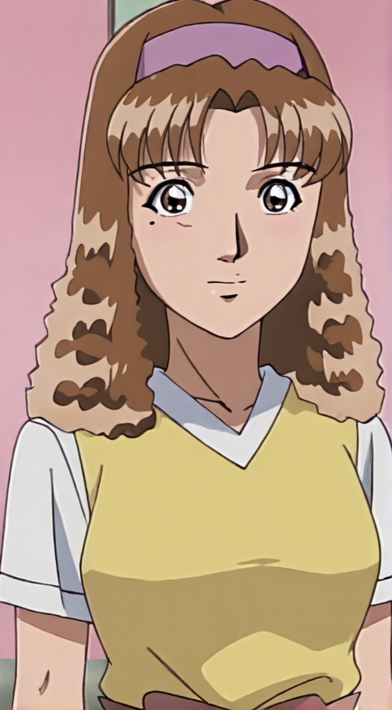
SD1.5
キャラ
looking_at_viewer
「looking at viewer」を精密に再現する追加学習モデルです。Stable DiffusionのAI画像生成において、特徴的な容姿や表情をLoRAで安定させて描画。ハイクオリティな特定キャラ画像を生成したい方に最適です。
Size: 8,789,076
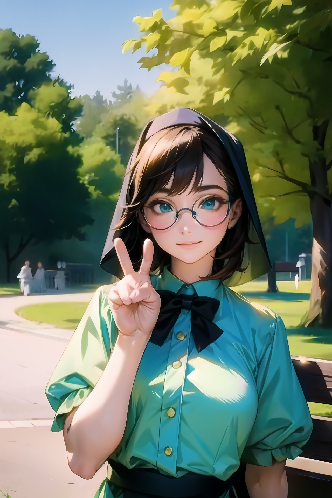
SD1.5
キャラ
lora-dim8-peace-v0-3_sd-1-5
「lora dim8 peace v0 3 sd 1 5」を精密に再現する追加学習モデルです。Stable DiffusionのAI画像生成において、特徴的な容姿や表情をLoRAで安定させて描画。ハイクオリティな特定キャラ画像を生成したい方に最適です。
Size: 39,824,290
SD1.5
キャラ
loraOshinoShinobu-v1
「loraOshinoShinobu v1」を精密に再現する追加学習モデルです。Stable DiffusionのAI画像生成において、特徴的な容姿や表情をLoRAで安定させて描画。ハイクオリティな特定キャラ画像を生成したい方に最適です。
Size: 151,121,110

SD1.5
キャラ
love is war
「love is war」を精密に再現する追加学習モデルです。Stable DiffusionのAI画像生成において、特徴的な容姿や表情をLoRAで安定させて描画。ハイクオリティな特定キャラ画像を生成したい方に最適です。
Size: 19,065,100
SD1.5
キャラ
LoveLiveAllStars_ZIT
「LoveLiveAllStars ZIT」を精密に再現する追加学習モデルです。Stable DiffusionのAI画像生成において、特徴的な容姿や表情をLoRAで安定させて描画。ハイクオリティな特定キャラ画像を生成したい方に最適です。
Size: 212,644,912
.jpg)
SD1.5
画風
Lucasarts Artstyle - (Trigger is lcas artstyle)
「Lucasarts Artstyle (Trigger is lcas artstyle)」の独特なタッチを反映する追加学習モデル。Stable DiffusionでのAI画像生成で、色彩や質感をLoRAにより一変させます。独創的で芸術性の高い作品を追求するクリエイターにおすすめです。
Size: 456,484,932
SD1.5
画風
lucy_heartfilia_v11
「lucy heartfilia v11」の独特なタッチを反映する追加学習モデル。Stable DiffusionでのAI画像生成で、色彩や質感をLoRAにより一変させます。独創的で芸術性の高い作品を追求するクリエイターにおすすめです。
Size: 37,871,457
SD1.5
キャラ
lumine1-000008
「lumine1 000008」を精密に再現する追加学習モデルです。Stable DiffusionのAI画像生成において、特徴的な容姿や表情をLoRAで安定させて描画。ハイクオリティな特定キャラ画像を生成したい方に最適です。
Size: 19,082,285
SD1.5
キャラ
lunamaria_hawke_v10
「lunamaria hawke v10」を精密に再現する追加学習モデルです。Stable DiffusionのAI画像生成において、特徴的な容姿や表情をLoRAで安定させて描画。ハイクオリティな特定キャラ画像を生成したい方に最適です。
Size: 37,868,170
SD1.5
キャラ
Madoka
「Madoka」を精密に再現する追加学習モデルです。Stable DiffusionのAI画像生成において、特徴的な容姿や表情をLoRAで安定させて描画。ハイクオリティな特定キャラ画像を生成したい方に最適です。
Size: 37,862,535
SD1.5
キャラ
mafic_5ty1e_v3
「mafic 5ty1e v3」を精密に再現する追加学習モデルです。Stable DiffusionのAI画像生成において、特徴的な容姿や表情をLoRAで安定させて描画。ハイクオリティな特定キャラ画像を生成したい方に最適です。
Size: 228,469,816
SD1.5
キャラ
makima_offset
「makima offset」を精密に再現する追加学習モデルです。Stable DiffusionのAI画像生成において、特徴的な容姿や表情をLoRAで安定させて描画。ハイクオリティな特定キャラ画像を生成したい方に最適です。
Size: 151,073,665
SD1.5
キャラ
MakinamiMariV1-000008
「MakinamiMariV1 000008」を精密に再現する追加学習モデルです。Stable DiffusionのAI画像生成において、特徴的な容姿や表情をLoRAで安定させて描画。ハイクオリティな特定キャラ画像を生成したい方に最適です。
Size: 151,123,143

SD1.5
キャラ
Mari Spirit GrandChase
「Mari Spirit GrandChase」を精密に再現する追加学習モデルです。Stable DiffusionのAI画像生成において、特徴的な容姿や表情をLoRAで安定させて描画。ハイクオリティな特定キャラ画像を生成したい方に最適です。
Size: 256,056,360
SD1.5
キャラ
MarieroseV1
「MarieroseV1」を精密に再現する追加学習モデルです。Stable DiffusionのAI画像生成において、特徴的な容姿や表情をLoRAで安定させて描画。ハイクオリティな特定キャラ画像を生成したい方に最適です。
Size: 37,862,595
SD1.5
キャラ
marieV1.0
「marieV1.0」を精密に再現する追加学習モデルです。Stable DiffusionのAI画像生成において、特徴的な容姿や表情をLoRAで安定させて描画。ハイクオリティな特定キャラ画像を生成したい方に最適です。
Size: 9,550,024
SD1.5
キャラ
MarineV1
「MarineV1」を精密に再現する追加学習モデルです。Stable DiffusionのAI画像生成において、特徴的な容姿や表情をLoRAで安定させて描画。ハイクオリティな特定キャラ画像を生成したい方に最適です。
Size: 9,550,952

SD1.5
画風
marinkitagawas1-lora-nochekaiser
「marinkitagawas1 lora nochekaiser」の独特なタッチを反映する追加学習モデル。Stable DiffusionでのAI画像生成で、色彩や質感をLoRAにより一変させます。独創的で芸術性の高い作品を追求するクリエイターにおすすめです。
Size: 37,928,096
SD1.5
キャラ
marnie_v1
「marnie v1」を精密に再現する追加学習モデルです。Stable DiffusionのAI画像生成において、特徴的な容姿や表情をLoRAで安定させて描画。ハイクオリティな特定キャラ画像を生成したい方に最適です。
Size: 37,880,597
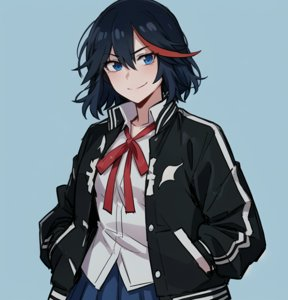
SD1.5
キャラ
MatoiRyuukoV3
「MatoiRyuukoV3」を精密に再現する追加学習モデルです。Stable DiffusionのAI画像生成において、特徴的な容姿や表情をLoRAで安定させて描画。ハイクオリティな特定キャラ画像を生成したい方に最適です。
Size: 151,129,453
SD1.5
キャラ
mAYURA8
「mAYURA8」を精密に再現する追加学習モデルです。Stable DiffusionのAI画像生成において、特徴的な容姿や表情をLoRAで安定させて描画。ハイクオリティな特定キャラ画像を生成したい方に最適です。
Size: 228,454,740
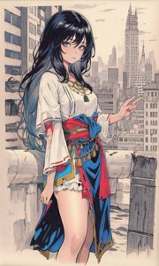
SD1.5
キャラ
MedsonlimaV1.0
「MedsonlimaV1.0」を精密に再現する追加学習モデルです。Stable DiffusionのAI画像生成において、特徴的な容姿や表情をLoRAで安定させて描画。ハイクオリティな特定キャラ画像を生成したい方に最適です。
Size: 9,550,344
SD1.5
衣装
MeguminWinterOutfit
「MeguminWinterOutfit」の衣装を付与できる追加学習モデルです。Stable DiffusionのAI画像生成でLoRAを活用し、細部までこだわり抜いたデザインを固定可能。特定のコスチュームを手軽に再現したい時に重宝します。
Size: 151,112,576
SD1.5
キャラ
mercury_v2
「mercury v2」を精密に再現する追加学習モデルです。Stable DiffusionのAI画像生成において、特徴的な容姿や表情をLoRAで安定させて描画。ハイクオリティな特定キャラ画像を生成したい方に最適です。
Size: 37,870,941
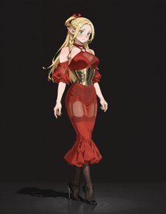
SD1.5
衣装
MetalCorsetSheerRetroHalterDressILLV2
「MetalCorsetSheerRetroHalterDressILLV2」の衣装を付与できる追加学習モデルです。Stable DiffusionのAI画像生成でLoRAを活用し、細部までこだわり抜いたデザインを固定可能。特定のコスチュームを手軽に再現したい時に重宝します。
Size: 228,454,892
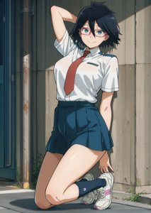
SD1.5
キャラ
Midnight_Vigilante_r2
「Midnight Vigilante r2」を精密に再現する追加学習モデルです。Stable DiffusionのAI画像生成において、特徴的な容姿や表情をLoRAで安定させて描画。ハイクオリティな特定キャラ画像を生成したい方に最適です。
Size: 228,472,012
SD1.5
キャラ
MidorikawaHanaV8
「MidorikawaHanaV8」を精密に再現する追加学習モデルです。Stable DiffusionのAI画像生成において、特徴的な容姿や表情をLoRAで安定させて描画。ハイクオリティな特定キャラ画像を生成したい方に最適です。
Size: 75,610,934
SD1.5
キャラ
mie-anima
「mie anima」を精密に再現する追加学習モデルです。Stable DiffusionのAI画像生成において、特徴的な容姿や表情をLoRAで安定させて描画。ハイクオリティな特定キャラ画像を生成したい方に最適です。
Size: 138,721,608
SD1.5
キャラ
mikasa_ackerman_v1
「mikasa ackerman v1」を精密に再現する追加学習モデルです。Stable DiffusionのAI画像生成において、特徴的な容姿や表情をLoRAで安定させて描画。ハイクオリティな特定キャラ画像を生成したい方に最適です。
Size: 37,861,388
SD1.5
キャラ
milimF-000020
「milimF 000020」を精密に再現する追加学習モデルです。Stable DiffusionのAI画像生成において、特徴的な容姿や表情をLoRAで安定させて描画。ハイクオリティな特定キャラ画像を生成したい方に最適です。
Size: 10,914,594
SD1.5
キャラ
minamoto_no_raikou_v1
「minamoto no raikou v1」を精密に再現する追加学習モデルです。Stable DiffusionのAI画像生成において、特徴的な容姿や表情をLoRAで安定させて描画。ハイクオリティな特定キャラ画像を生成したい方に最適です。
Size: 37,881,024
SD1.5
キャラ
minato_aqua_(neko)_v1
「minato aqua (neko) v1」を精密に再現する追加学習モデルです。Stable DiffusionのAI画像生成において、特徴的な容姿や表情をLoRAで安定させて描画。ハイクオリティな特定キャラ画像を生成したい方に最適です。
Size: 151,111,160
SD1.5
キャラ
minato_aqua_v1
「minato aqua v1」を精密に再現する追加学習モデルです。Stable DiffusionのAI画像生成において、特徴的な容姿や表情をLoRAで安定させて描画。ハイクオリティな特定キャラ画像を生成したい方に最適です。
Size: 37,861,388
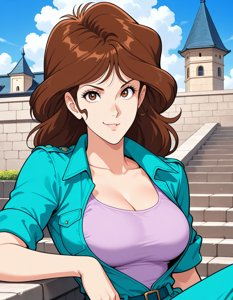
SD1.5
キャラ
mine_fujiko_pt3
「mine fujiko pt3」を精密に再現する追加学習モデルです。Stable DiffusionのAI画像生成において、特徴的な容姿や表情をLoRAで安定させて描画。ハイクオリティな特定キャラ画像を生成したい方に最適です。
Size: 28,917,436
SD1.5
キャラ
miorine_rembran_v1_1
「miorine rembran v1 1」を精密に再現する追加学習モデルです。Stable DiffusionのAI画像生成において、特徴的な容姿や表情をLoRAで安定させて描画。ハイクオリティな特定キャラ画像を生成したい方に最適です。
Size: 75,624,070
SD1.5
キャラ
Misty
「Misty」を精密に再現する追加学習モデルです。Stable DiffusionのAI画像生成において、特徴的な容姿や表情をLoRAで安定させて描画。ハイクオリティな特定キャラ画像を生成したい方に最適です。
Size: 8,573,990
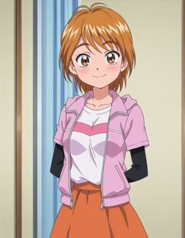
SD1.5
キャラ
misuminagisa_IL
「misuminagisa IL」を精密に再現する追加学習モデルです。Stable DiffusionのAI画像生成において、特徴的な容姿や表情をLoRAで安定させて描画。ハイクオリティな特定キャラ画像を生成したい方に最適です。
Size: 228,457,444
SD1.5
キャラ
mitsuba_greyvalley_v1
「mitsuba greyvalley v1」を精密に再現する追加学習モデルです。Stable DiffusionのAI画像生成において、特徴的な容姿や表情をLoRAで安定させて描画。ハイクオリティな特定キャラ画像を生成したい方に最適です。
Size: 37,867,007
SD1.5
キャラ
mitsuri-05
「mitsuri 05」を精密に再現する追加学習モデルです。Stable DiffusionのAI画像生成において、特徴的な容姿や表情をLoRAで安定させて描画。ハイクオリティな特定キャラ画像を生成したい方に最適です。
Size: 75,637,068
SD1.5
キャラ
mizuhara_chizuru_v2
「mizuhara chizuru v2」を精密に再現する追加学習モデルです。Stable DiffusionのAI画像生成において、特徴的な容姿や表情をLoRAで安定させて描画。ハイクオリティな特定キャラ画像を生成したい方に最適です。
Size: 37,861,388
SD1.5
キャラ
MizukiYukikazeV1_1
「MizukiYukikazeV1 1」を精密に再現する追加学習モデルです。Stable DiffusionのAI画像生成において、特徴的な容姿や表情をLoRAで安定させて描画。ハイクオリティな特定キャラ画像を生成したい方に最適です。
Size: 75,610,934
SD1.5
キャラ
MJ52
「MJ52」を精密に再現する追加学習モデルです。Stable DiffusionのAI画像生成において、特徴的な容姿や表情をLoRAで安定させて描画。ハイクオリティな特定キャラ画像を生成したい方に最適です。
Size: 2,280,805,228
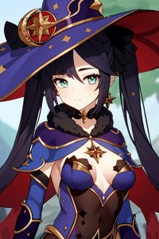
SD1.5
キャラ
Monav3
「Monav3」を精密に再現する追加学習モデルです。Stable DiffusionのAI画像生成において、特徴的な容姿や表情をLoRAで安定させて描画。ハイクオリティな特定キャラ画像を生成したい方に最適です。
Size: 75,615,054
SD1.5
キャラ
MordredV1
「MordredV1」を精密に再現する追加学習モデルです。Stable DiffusionのAI画像生成において、特徴的な容姿や表情をLoRAで安定させて描画。ハイクオリティな特定キャラ画像を生成したい方に最適です。
Size: 8,574,596
SD1.5
キャラ
MRN0093ILL
「MRN0093ILL」を精密に再現する追加学習モデルです。Stable DiffusionのAI画像生成において、特徴的な容姿や表情をLoRAで安定させて描画。ハイクオリティな特定キャラ画像を生成したい方に最適です。
Size: 228,470,228
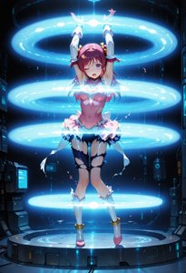
SD1.5
キャラ
multiple_glowing_ring
「multiple glowing ring」を精密に再現する追加学習モデルです。Stable DiffusionのAI画像生成において、特徴的な容姿や表情をLoRAで安定させて描画。ハイクオリティな特定キャラ画像を生成したい方に最適です。
Size: 228,456,100
SD1.5
キャラ
mythra_pyra_pneuma-000050
「mythra pyra pneuma 000050」を精密に再現する追加学習モデルです。Stable DiffusionのAI画像生成において、特徴的な容姿や表情をLoRAで安定させて描画。ハイクオリティな特定キャラ画像を生成したい方に最適です。
Size: 302,069,805
SD1.5
キャラ
nakano_miku_v10
「nakano miku v10」を精密に再現する追加学習モデルです。Stable DiffusionのAI画像生成において、特徴的な容姿や表情をLoRAで安定させて描画。ハイクオリティな特定キャラ画像を生成したい方に最適です。
Size: 37,876,595
SD1.5
キャラ
nakano_nino_v10
「nakano nino v10」を精密に再現する追加学習モデルです。Stable DiffusionのAI画像生成において、特徴的な容姿や表情をLoRAで安定させて描画。ハイクオリティな特定キャラ画像を生成したい方に最適です。
Size: 75,635,575
SD1.5
画風
NakiriAyame_Hololive_Part01_IL-03
「NakiriAyame Hololive Part01 IL 03」の独特なタッチを反映する追加学習モデル。Stable DiffusionでのAI画像生成で、色彩や質感をLoRAにより一変させます。独創的で芸術性の高い作品を追求するクリエイターにおすすめです。
Size: 50,985,652
SD1.5
キャラ
nanpamisa_IL1-200009
「nanpamisa IL1 200009」を精密に再現する追加学習モデルです。Stable DiffusionのAI画像生成において、特徴的な容姿や表情をLoRAで安定させて描画。ハイクオリティな特定キャラ画像を生成したい方に最適です。
Size: 172,062,896
SD1.5
キャラ
naxidaV3
「naxidaV3」を精密に再現する追加学習モデルです。Stable DiffusionのAI画像生成において、特徴的な容姿や表情をLoRAで安定させて描画。ハイクオリティな特定キャラ画像を生成したい方に最適です。
Size: 151,112,128
SD1.5
キャラ
nekomusume_v1
「nekomusume v1」を精密に再現する追加学習モデルです。Stable DiffusionのAI画像生成において、特徴的な容姿や表情をLoRAで安定させて描画。ハイクオリティな特定キャラ画像を生成したい方に最適です。
Size: 75,620,299
SD1.5
キャラ
Nijicool
「Nijicool」を精密に再現する追加学習モデルです。Stable DiffusionのAI画像生成において、特徴的な容姿や表情をLoRAで安定させて描画。ハイクオリティな特定キャラ画像を生成したい方に最適です。
Size: 37,863,624
SD1.5
その他
nilou_1024_Lion_dim64_kohyaLoRA_fp32_3e-2noise_token2_20-3-2023
「nilou 1024 Lion dim64 kohyaLoRA fp32 3e 2noise token2 20 3 2023」に特化した追加学習モデルです。Stable DiffusionでのAI画像生成にLoRAを導入し、特定要素の再現性を劇的に向上。効率的かつ高品質なビジュアルを求める全てのAI絵師必見のモデルです。
Size: 151,137,112

SD1.5
衣装
ninomae ina'nis 5 outfits
「ninomae ina'nis 5 outfits」の衣装を付与できる追加学習モデルです。Stable DiffusionのAI画像生成でLoRAを活用し、細部までこだわり抜いたデザインを固定可能。特定のコスチュームを手軽に再現したい時に重宝します。
Size: 19,012,646
SD1.5
キャラ
noc-wfhlgr2
「noc wfhlgr2」を精密に再現する追加学習モデルです。Stable DiffusionのAI画像生成において、特徴的な容姿や表情をLoRAで安定させて描画。ハイクオリティな特定キャラ画像を生成したい方に最適です。
Size: 114,434,244

SD1.5
キャラ
noel anderson
「noel anderson」を精密に再現する追加学習モデルです。Stable DiffusionのAI画像生成において、特徴的な容姿や表情をLoRAで安定させて描画。ハイクオリティな特定キャラ画像を生成したい方に最適です。
Size: 228,456,108
SD1.5
キャラ
nokezori_1.0_INS2
「nokezori 1.0 INS2」を精密に再現する追加学習モデルです。Stable DiffusionのAI画像生成において、特徴的な容姿や表情をLoRAで安定させて描画。ハイクオリティな特定キャラ画像を生成したい方に最適です。
Size: 9,548,323

SD1.5
衣装
NSFW White sexy stockings nurse costume
「NSFW White sexy stockings nurse costume」の衣装を付与できる追加学習モデルです。Stable DiffusionのAI画像生成でLoRAを活用し、細部までこだわり抜いたデザインを固定可能。特定のコスチュームを手軽に再現したい時に重宝します。
Size: 306,807,976
SD1.5
キャラ
NukuNukuRetro_ANIMA
「NukuNukuRetro ANIMA」を精密に再現する追加学習モデルです。Stable DiffusionのAI画像生成において、特徴的な容姿や表情をLoRAで安定させて描画。ハイクオリティな特定キャラ画像を生成したい方に最適です。
Size: 57,460,800
SD1.5
キャラ
NurseMarnie_NAI
「NurseMarnie NAI」を精密に再現する追加学習モデルです。Stable DiffusionのAI画像生成において、特徴的な容姿や表情をLoRAで安定させて描画。ハイクオリティな特定キャラ画像を生成したい方に最適です。
Size: 228,447,508
SD1.5
キャラ
OC
「OC」を精密に再現する追加学習モデルです。Stable DiffusionのAI画像生成において、特徴的な容姿や表情をLoRAで安定させて描画。ハイクオリティな特定キャラ画像を生成したい方に最適です。
Size: 151,117,335
SD1.5
キャラ
ossan-v2_000010
「ossan v2 000010」を精密に再現する追加学習モデルです。Stable DiffusionのAI画像生成において、特徴的な容姿や表情をLoRAで安定させて描画。ハイクオリティな特定キャラ画像を生成したい方に最適です。
Size: 44,301,010
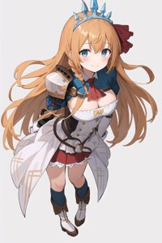
SD1.5
キャラ
pecorineV1
「pecorineV1」を精密に再現する追加学習モデルです。Stable DiffusionのAI画像生成において、特徴的な容姿や表情をLoRAで安定させて描画。ハイクオリティな特定キャラ画像を生成したい方に最適です。
Size: 37,863,942
SD1.5
キャラ
pekora1-000009
「pekora1 000009」を精密に再現する追加学習モデルです。Stable DiffusionのAI画像生成において、特徴的な容姿や表情をLoRAで安定させて描画。ハイクオリティな特定キャラ画像を生成したい方に最適です。
Size: 38,023,174
SD1.5
画風
Pink_3
「Pink 3」の独特なタッチを反映する追加学習モデル。Stable DiffusionでのAI画像生成で、色彩や質感をLoRAにより一変させます。独創的で芸術性の高い作品を追求するクリエイターにおすすめです。
Size: 114,437,516
SD1.5
キャラ
pixel-portrait-v1
「pixel portrait v1」を精密に再現する追加学習モデルです。Stable DiffusionのAI画像生成において、特徴的な容姿や表情をLoRAで安定させて描画。ハイクオリティな特定キャラ画像を生成したい方に最適です。
Size: 151,113,708
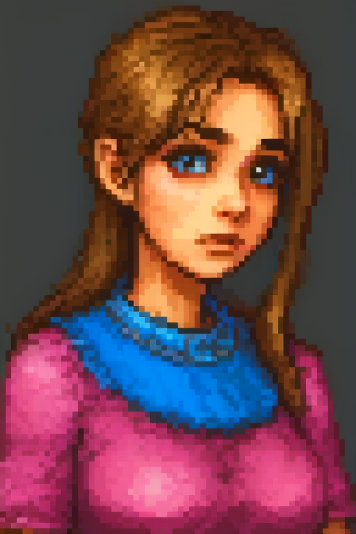
SD1.5
キャラ
Pixel_anime_girl
「Pixel anime girl」を精密に再現する追加学習モデルです。Stable DiffusionのAI画像生成において、特徴的な容姿や表情をLoRAで安定させて描画。ハイクオリティな特定キャラ画像を生成したい方に最適です。
Size: 228,466,668
SD1.5
キャラ
plastic_little_retry
「plastic little retry」を精密に再現する追加学習モデルです。Stable DiffusionのAI画像生成において、特徴的な容姿や表情をLoRAで安定させて描画。ハイクオリティな特定キャラ画像を生成したい方に最適です。
Size: 340,778,020
SD1.5
キャラ
PokeMarnie
「PokeMarnie」を精密に再現する追加学習モデルです。Stable DiffusionのAI画像生成において、特徴的な容姿や表情をLoRAで安定させて描画。ハイクオリティな特定キャラ画像を生成したい方に最適です。
Size: 8,575,684
SD1.5
キャラ
POVDoggy
「POVDoggy」を精密に再現する追加学習モデルです。Stable DiffusionのAI画像生成において、特徴的な容姿や表情をLoRAで安定させて描画。ハイクオリティな特定キャラ画像を生成したい方に最適です。
Size: 945,776
SD1.5
キャラ
PrinzEugenV4-15
「PrinzEugenV4 15」を精密に再現する追加学習モデルです。Stable DiffusionのAI画像生成において、特徴的な容姿や表情をLoRAで安定させて描画。ハイクオリティな特定キャラ画像を生成したい方に最適です。
Size: 37,885,767

SD1.5
キャラ
Prism_ParalysisZE3
「Prism ParalysisZE3」を精密に再現する追加学習モデルです。Stable DiffusionのAI画像生成において、特徴的な容姿や表情をLoRAで安定させて描画。ハイクオリティな特定キャラ画像を生成したい方に最適です。
Size: 170,127,768
SD1.5
キャラ
PSCowgirl
「PSCowgirl」を精密に再現する追加学習モデルです。Stable DiffusionのAI画像生成において、特徴的な容姿や表情をLoRAで安定させて描画。ハイクオリティな特定キャラ画像を生成したい方に最適です。
Size: 946,824
SD1.5
キャラ
Pyra_XB2_AnimaP_v01
「Pyra XB2 AnimaP v01」を精密に再現する追加学習モデルです。Stable DiffusionのAI画像生成において、特徴的な容姿や表情をLoRAで安定させて描画。ハイクオリティな特定キャラ画像を生成したい方に最適です。
Size: 45,981,104
SD1.5
キャラ
QAQv5p2_IL-40
「QAQv5p2 IL 40」を精密に再現する追加学習モデルです。Stable DiffusionのAI画像生成において、特徴的な容姿や表情をLoRAで安定させて描画。ハイクオリティな特定キャラ画像を生成したい方に最適です。
Size: 80,424,920

SD1.5
キャラ
QipaoIllyaCitronOCAnime_ANIMA
「QipaoIllyaCitronOCAnime ANIMA」を精密に再現する追加学習モデルです。Stable DiffusionのAI画像生成において、特徴的な容姿や表情をLoRAで安定させて描画。ハイクオリティな特定キャラ画像を生成したい方に最適です。
Size: 57,450,656
SD1.5
キャラ
qqq-footjob-v2
「qqq footjob v2」を精密に再現する追加学習モデルです。Stable DiffusionのAI画像生成において、特徴的な容姿や表情をLoRAで安定させて描画。ハイクオリティな特定キャラ画像を生成したい方に最適です。
Size: 37,871,784
SD1.5
キャラ
quinella_(sao)_v10
「quinella (sao) v10」を精密に再現する追加学習モデルです。Stable DiffusionのAI画像生成において、特徴的な容姿や表情をLoRAで安定させて描画。ハイクオリティな特定キャラ画像を生成したい方に最適です。
Size: 151,118,442
SD1.5
キャラ
quintuplets-10-new
「quintuplets 10 new」を精密に再現する追加学習モデルです。Stable DiffusionのAI画像生成において、特徴的な容姿や表情をLoRAで安定させて描画。ハイクオリティな特定キャラ画像を生成したい方に最適です。
Size: 37,952,615

SD1.5
キャラ
raiden shogun_LoRA
「raiden shogun LoRA」を精密に再現する追加学習モデルです。Stable DiffusionのAI画像生成において、特徴的な容姿や表情をLoRAで安定させて描画。ハイクオリティな特定キャラ画像を生成したい方に最適です。
Size: 151,073,665
SD1.5
キャラ
raidenshogun1-000009
「raidenshogun1 000009」を精密に再現する追加学習モデルです。Stable DiffusionのAI画像生成において、特徴的な容姿や表情をLoRAで安定させて描画。ハイクオリティな特定キャラ画像を生成したい方に最適です。
Size: 75,697,861
SD1.5
キャラ
ramen_v1.4
「ramen v1.4」を精密に再現する追加学習モデルです。Stable DiffusionのAI画像生成において、特徴的な容姿や表情をLoRAで安定させて描画。ハイクオリティな特定キャラ画像を生成したい方に最適です。
Size: 13,896,362
SD1.5
キャラ
ram_rezero_v1
「ram rezero v1」を精密に再現する追加学習モデルです。Stable DiffusionのAI画像生成において、特徴的な容姿や表情をLoRAで安定させて描画。ハイクオリティな特定キャラ画像を生成したい方に最適です。
Size: 75,620,035

SD1.5
その他
rei ayanami rebuild-lora-nochekaiser
「rei ayanami rebuild lora nochekaiser」に特化した追加学習モデルです。Stable DiffusionでのAI画像生成にLoRAを導入し、特定要素の再現性を劇的に向上。効率的かつ高品質なビジュアルを求める全てのAI絵師必見のモデルです。
Size: 37,876,728
SD1.5
キャラ
Reisalin_Stout4-000003
「Reisalin Stout4 000003」を精密に再現する追加学習モデルです。Stable DiffusionのAI画像生成において、特徴的な容姿や表情をLoRAで安定させて描画。ハイクオリティな特定キャラ画像を生成したい方に最適です。
Size: 114,435,844
SD1.5
キャラ
Rella-000195
「Rella 000195」を精密に再現する追加学習モデルです。Stable DiffusionのAI画像生成において、特徴的な容姿や表情をLoRAで安定させて描画。ハイクオリティな特定キャラ画像を生成したい方に最適です。
Size: 280,929,256
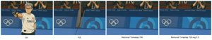
SD1.5
キャラ
removal_timestep_alpha-2-1740
「removal timestep alpha 2 1740」を精密に再現する追加学習モデルです。Stable DiffusionのAI画像生成において、特徴的な容姿や表情をLoRAで安定させて描画。ハイクオリティな特定キャラ画像を生成したい方に最適です。
Size: 89,746,016
SD1.5
キャラ
rem_v1
「rem v1」を精密に再現する追加学習モデルです。Stable DiffusionのAI画像生成において、特徴的な容姿や表情をLoRAで安定させて描画。ハイクオリティな特定キャラ画像を生成したい方に最適です。
Size: 75,610,358
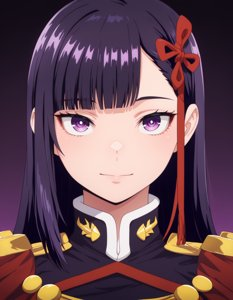
SD1.5
その他
ren_yamashiro-chained_soldier_s2-test-ana-anime-soralz-patched
「ren yamashiro chained soldier s2 test ana anime soralz patched」に特化した追加学習モデルです。Stable DiffusionでのAI画像生成にLoRAを導入し、特定要素の再現性を劇的に向上。効率的かつ高品質なビジュアルを求める全てのAI絵師必見のモデルです。
Size: 66,257,888
SD1.5
キャラ
rias_gremory_v2
「rias gremory v2」を精密に再現する追加学習モデルです。Stable DiffusionのAI画像生成において、特徴的な容姿や表情をLoRAで安定させて描画。ハイクオリティな特定キャラ画像を生成したい方に最適です。
Size: 75,612,882
SD1.5
キャラ
RibbonThighhighsILL
「RibbonThighhighsILL」を精密に再現する追加学習モデルです。Stable DiffusionのAI画像生成において、特徴的な容姿や表情をLoRAで安定させて描画。ハイクオリティな特定キャラ画像を生成したい方に最適です。
Size: 228,454,212
SD1.5
キャラ
rin-08
「rin 08」を精密に再現する追加学習モデルです。Stable DiffusionのAI画像生成において、特徴的な容姿や表情をLoRAで安定させて描画。ハイクオリティな特定キャラ画像を生成したい方に最適です。
Size: 37,895,575
SD1.5
キャラ
rin
「rin」を精密に再現する追加学習モデルです。Stable DiffusionのAI画像生成において、特徴的な容姿や表情をLoRAで安定させて描画。ハイクオリティな特定キャラ画像を生成したい方に最適です。
Size: 151,110,177
SD1.5
キャラ
Rinchans-10
「Rinchans 10」を精密に再現する追加学習モデルです。Stable DiffusionのAI画像生成において、特徴的な容姿や表情をLoRAで安定させて描画。ハイクオリティな特定キャラ画像を生成したい方に最適です。
Size: 50,944,116